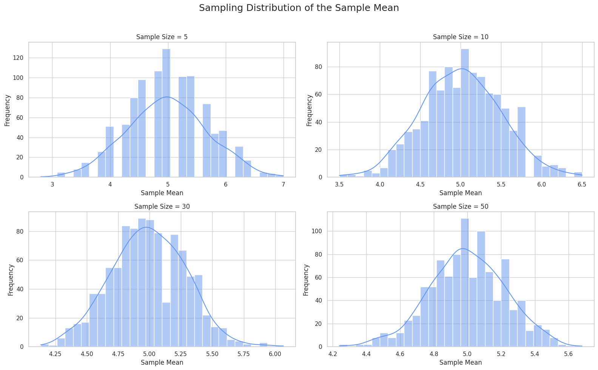

Problem 1
üìä Exploring the Central Limit Theorem through Simulations
üéØ Motivation
The Central Limit Theorem (CLT) is a cornerstone of probability and statistics. It states that the sampling distribution of the sample mean approaches a normal distribution as the sample size increases — regardless of the original population’s shape.
By using simulations, we can intuitively and visually understand this phenomenon and how randomness behaves in repeated sampling.
1️⃣ Simulating Sampling Distributions
We select several types of population distributions for analysis:
- üé≤ Uniform Distribution
- üìâ Exponential Distribution
- üéØ Binomial Distribution
2️⃣ Sampling and Visualization
From each synthetic population, we randomly sample and compute the sample mean for various sample sizes:
- Sample sizes: 5, 10, 30, 50
We repeat the process many times (e.g., 1000 simulations) to construct the sampling distribution of the sample mean.
Then, we plot histograms to visualize how the distribution of sample means evolves with sample size.
import numpy as np
import matplotlib.pyplot as plt
import seaborn as sns
sns.set(style="whitegrid")
# Function to simulate and plot CLT behavior
def simulate_clt(population_func, pop_params, sample_sizes, n_simulations=1000):
plt.figure(figsize=(16, 10))
for i, n in enumerate(sample_sizes):
sample_means = [
np.mean(population_func(size=n, **pop_params))
for _ in range(n_simulations)
]
plt.subplot(2, 2, i + 1)
sns.histplot(sample_means, bins=30, kde=True, color="cornflowerblue")
plt.title(f"Sample Size = {n}")
plt.xlabel("Sample Mean")
plt.ylabel("Frequency")
plt.suptitle("Sampling Distribution of the Sample Mean", fontsize=18)
plt.tight_layout(rect=[0, 0, 1, 0.96])
plt.show()
# Define sample sizes
sample_sizes = [5, 10, 30, 50]
# Uniform Distribution
print("üî∑ Uniform Distribution")
simulate_clt(np.random.uniform, {'low': 0, 'high': 10}, sample_sizes)
# Exponential Distribution
print("üî∂ Exponential Distribution")
simulate_clt(np.random.exponential, {'scale': 2.0}, sample_sizes)
# Binomial Distribution
print("⚪ Binomial Distribution")
simulate_clt(np.random.binomial, {'n': 10, 'p': 0.5}, sample_sizes)

3️ Parameter Exploration
üîç Shape and Convergence
- Exponential Distribution: Initially skewed, but the sample mean becomes more symmetric as sample size increases.
- Uniform Distribution: Already symmetric, so it converges faster.
- Binomial Distribution: Discrete, but smooths and becomes bell-shaped with larger samples.
üîç Variance Impact
-The spread (standard deviation) of the sample mean distribution decreases as the sample size increases.
4. Practical Applications üåç
- Estimating population parameters üßæ
- Quality control in manufacturing üè≠
- Financial models and risk analysis üíπ
Conclusion & Tips ✨
- Larger sample sizes produce distributions closer to normal!
- Increasing variance broadens the spread of the sampling distribution.
üöÄ Remember: These simulations help you see the power of the CLT and understand its real-world importance!